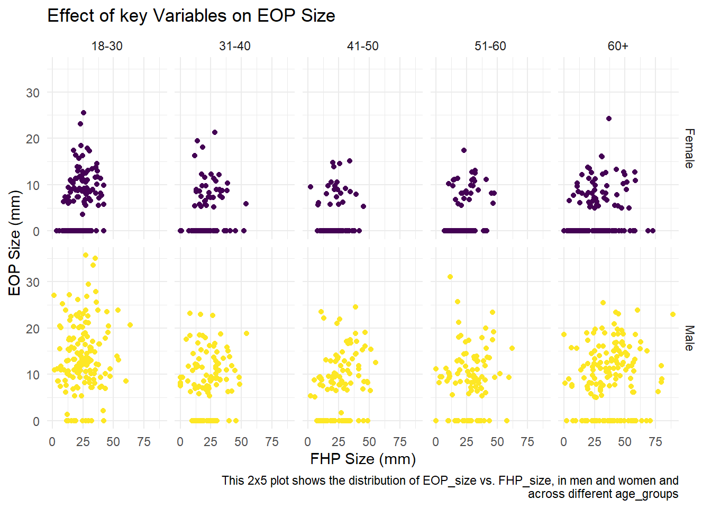

Posture and Horns!
Introduction
This project examines if there is association between External Occipital Protuberance (EOP) and a combination of age, sex, and degree of Forward Head Protraction (FHP).
eop_data = read_excel("mtp_data/p8105_mtp_data.xlsx", skip = 7) %>%
janitor::clean_names() %>%
select(sex, age_group, age, eop_size_group = eop_size, eop_size = eop_size_mm,
eop_visibility_class = eop_visibility_classification, eop_shape,
fhp_category, fhp_size = fhp_size_mm) %>%
filter(age_group > 1) %>%
mutate(
eop_size = replace_na(eop_size, 0),
sex = factor(sex),
eop_visibility_class = factor(eop_visibility_class, levels = c('0', '1', '2'), ordered = TRUE),
eop_shape = factor(eop_shape, levels = c(1, 2, 3)),
age_group = factor(age_group, levels = c('2', '3', '4', '5', '6', '7', '8'),
labels = c('18-30', '31-40', '41-50', '51-60', '60+',
'60+', '60+'), ordered = TRUE),
eop_size_group = factor(eop_size_group, levels = c('0', '1', '2', '3', '4', '5'),ordered = TRUE),
fhp_category = factor(fhp_category, levels = c('0', '1', '2', '3', '4', '5', '6', '7'), ordered = TRUE)
)
head(eop_data, 3)## # A tibble: 3 x 9
## sex age_group age eop_size_group eop_size eop_visibility_~ eop_shape
## <fct> <ord> <dbl> <ord> <dbl> <ord> <fct>
## 1 1 18-30 18 2 14.8 2 3
## 2 1 18-30 26 3 17.1 2 3
## 3 0 18-30 22 0 0 1 <NA>
## # ... with 2 more variables: fhp_category <ord>, fhp_size <dbl>Data
Skipped variables information header, cleaned names, reordered/renamed some columns. Replaced eop_size ’NA’s with 0(actual value). created factor variables for categoricals, ordered them if their order matters. Omitted age_group=1 because there were no pattern(aged 17,45) and was not included in study. Combined age_groups 6,7,8 in 60+ as how treated in analyses and header. Recoded to more descriptive age_groups.
Resulting dataset has 9 variables of 1219 participants, with key variables age(age_group), sex, fhp_category, and eop_size(eop_size_category).There were 613 women and 606 men. Sex distribution across age_groups:
age_sex_table = eop_data %>%
group_by(age_group, sex) %>%
summarize(count = n()) %>%
pivot_wider(
names_from = age_group,
values_from = count
) %>%
mutate(sex = recode(sex, `0` = "Female", `1` = "Male")) %>%
knitr::kable()| sex | 18-30 | 31-40 | 41-50 | 51-60 | 60+ |
|---|---|---|---|---|---|
| Female | 151 | 102 | 106 | 99 | 155 |
| Male | 152 | 102 | 101 | 101 | 150 |
Data Issues
cat_eop = eop_data %>%
group_by(eop_size, eop_size_group, eop_visibility_class) %>%
filter(eop_size == 5 | eop_size == 10 | eop_size == 15 | eop_size == 20 | eop_size == 25) %>%
summarize(count = n()) %>%
knitr::kable()2 people aged 17 and 45 in age_group=1 which had not been defined.
Participants age range=18, 88(reported:18,86).
Table shows overlaps in continuous-categorical coversion. In eop_category cut-offs: Same eop_size(5) is associated with different size_categories(0,1) and visibility_groups(1,2). One mistaken eop size group(14.6) noted (shows as ‘NA’ since not among defined factor levels). We should have 8 FHP categories(0-7) but we have9,because of mistaken value(30.8).
| eop_size | eop_size_group | eop_visibility_class | count |
|---|---|---|---|
| 5 | 0 | 2 | 1 |
| 5 | 1 | 1 | 1 |
| 5 | 1 | 2 | 2 |
| 10 | 2 | 2 | 1 |
| 15 | 3 | 2 | 2 |
| 15 | NA | 2 | 1 |
| 20 | 3 | 2 | 2 |
Also, 8 people with eop_visibility_class=1, but eop_size>5.
73 with eop_size=0 but eop_visibility_class other than 0.
1 with eop_size=11.3 but eop_visibility_class=0.
5 with eop_size<5 but eop_visibility_class=2.
Visualization
# Boxplot for fhp distribution
fhp_age_dist = eop_data %>%
ggplot(aes(x = age_group, y = fhp_size)) +
geom_boxplot(aes(fill = sex)) +
labs(
title = "FHP Distribution Across Age Group",
x = "Age Groups (years)",
y = "FHP Size (mm)",
caption = "Figure 3 modified to show distribution instead of mean and median"
) +
scale_fill_discrete(name = "Sex", labels = c("Female", "Male")) +
theme(
legend.position = c(.5, .95),
legend.justification = c("right", "top")
)
# EEOP rate plot
eeop_rate_plot = eop_data %>%
group_by(age_group, sex) %>%
mutate(group_n = n()) %>%
group_by(age_group, sex, group_n) %>%
filter (
eop_size_group > 1
) %>%
summarize(eeop_n = n()) %>%
mutate(
rate = eeop_n /group_n
) %>%
ggplot(aes(x = age_group, y = rate, color = sex, group = sex)) +
geom_point() +
geom_line() +
labs(
title = "Rate of EEOP Across Age Groups",
x = "Age Groups (years)",
y = "EEOP Rate",
caption = "Figure 4 modified to show rate of EEOP instead of count"
) +
scale_colour_discrete(name = "Sex", labels = c("Female", "Male")) +
theme(
legend.position = c(.5, .95),
legend.justification = c("right", "top")
)
# joining plots using patchwork
(fhp_age_dist + eeop_rate_plot)
FHP_size Boxplot: In higher age_groups fhp_size is more spread (higher IQR), and increased in median value by sex mostly. Also, increased difference of median fhp_size between men and women. Higher FHP_size median and IQR for men and in age60+. We cannot see as strong effect on other groups. EEOP_rate Plot: There is high eeop_rate among 18-30, but plots get flatter after that(compared to count plot). This shows that there is higher chance of eeop in this group compared to others, cannot generalize about other groups.
collection_plot = eop_data %>%
ggplot(aes(x = fhp_size, y = eop_size, color = sex)) +
geom_point() +
facet_grid(sex ~ age_group,
labeller = labeller(sex = as_labeller(c("0" = "Female", "1" = "Male")))) +
labs(
title = "Effect of key Variables on EOP Size",
x = "FHP Size (mm)",
y = "EOP Size (mm)",
caption = "This 2x5 plot shows the distribution of EOP_size vs. FHP_size, in men and women and
across different age_groups"
) +
theme(legend.position = "None")
collection_plot 
Generally, we can observe dispersed distribution(most disperesed in men 18-31 and 60+), and there is no specific trend for how eop_size changes with increase of FHP_size in different groups. With performing complementary statistical tests, we might conclude there is no association between these variables. However, according to the article, increase in fhp_size is linked to increase in eop_size.
Reproducing Reported Results
sample_size = eop_data %>%
group_by(age_group) %>%
summarize(sample_size = n()) %>%
mutate(
reported_sample_size = c("300", "200", "200", "200", "300")
) %>%
knitr::kable()
eeop_prevalence = eop_data %>%
filter(eop_size > 10) %>%
nrow()/nrow(eop_data)
sixties_n = eop_data %>%
filter(age > 60) %>%
nrow()
fhp_n = eop_data %>%
filter(age > 60 & fhp_size > 40) %>%
nrow()| age_group | sample_size | reported_sample_size |
|---|---|---|
| 18-30 | 303 | 300 |
| 31-40 | 204 | 200 |
| 41-50 | 207 | 200 |
| 51-60 | 200 | 200 |
| 60+ | 305 | 300 |
Table above shows that sample size for each age_group does not match reported figures. Also data contains a “group 1”(n=2) for age 17,45, which is not reported.
Repored mean FHP_size is “26 ±mm”. The value of standard deviation is not clear. The true FHP size mean for this sample is 26.08 ±13.01mm. This is high deviation and should have noted in statistical inference.
Eop_size>10 is enlarged. Prevalence is number of diseased people in total population. So, number of enlarged EOP people and total participants are needed. Result: 32.2%, different from reported(33%).
There are 305 people in age_group(60+), within which 99 have FHP_size>40(mm): frequency is 32.46%, not 34.5%. Broad trend shows higher FHP in 60+ group(much higher in men), but other age_groups don’t show increasing trend:
high_fhp_plot = eop_data %>%
filter(fhp_size > 40) %>%
group_by(age_group, sex, fhp_size) %>%
summarize(
n = n()
) %>%
ggplot(aes(x = age_group, fill = sex)) +
geom_bar(position = 'dodge') +
labs(
title = "Number of cases With Large FHP (FHP Size > 40) Across Age Groups",
x = "Age Groups (years)",
y = "Number of cases",
caption = "Plot shows that the broad trend on high FHP size with age is high in 60+ group
also, it is always greater in men than women, but there is no other uniform trend in data."
)
high_fhp_plotDiscussion
Authors conclude high Eop in result of age and fhp combination. However, it is not a genral trend in data. Also, 18-30 age group have high eop but there is no evidence where it comes from(young people visiting clinic might have genetic problems, etc.). Also, it doesn’t seem that people with higher fhp tend to have higher eop. Statistical analysis of research only relies on P-value which is not reliable without Confidence intervals. Analysis and sample size were not reported accurately(rounded), plots cherry-picked to justify esults. Source population were more prone to outcome(people visited clinic): Conslusions are only generalizable to the cohort and not to general population.
Data on complaint of patients visited clinic is needed. Data needed on time spent on devices, their occupation, their physical activity and diet which affects skeletal health. Should have controlled study for genetic variability(race/ethnicity). Results say nothing about causal link between cell-phone and horn! Can just discuss “possible” association between poor posture and EEOP, if all required information provided and controlled for confounders.
wordcountaddin::text_stats("p8105_mtp_ha2546.Rmd")## For information on available language packages for 'koRpus', run
##
## available.koRpus.lang()
##
## and see ?install.koRpus.lang()##
## Attaching package: 'koRpus'## The following object is masked from 'package:readr':
##
## tokenize| Method | koRpus | stringi |
|---|---|---|
| Word count | 513 | 470 |
| Character count | 3092 | 3115 |
| Sentence count | 53 | Not available |
| Reading time | 2.6 minutes | 2.4 minutes |